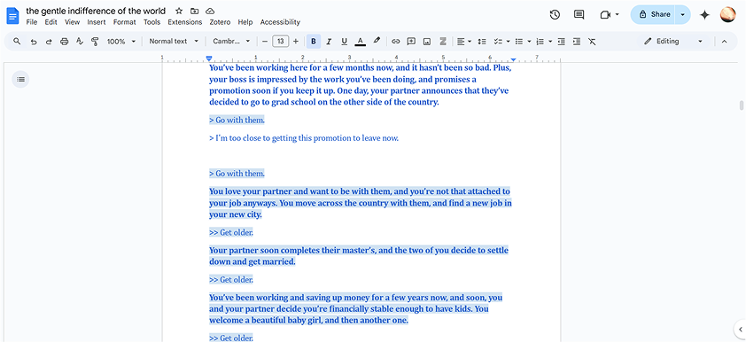
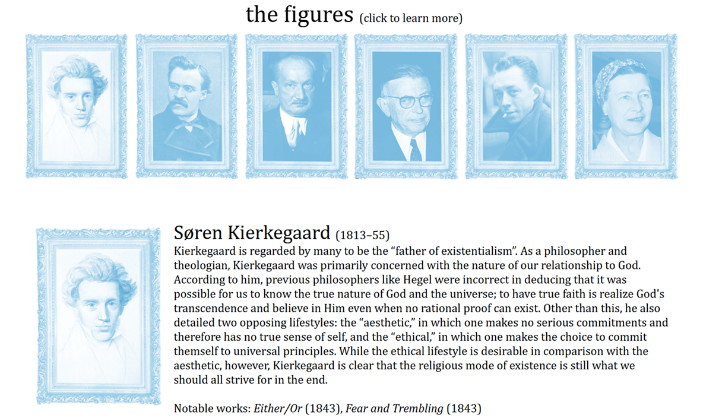

The Gentle Indifference of the World
April 2023
A web-based text game to teach 20th century philosophy

This website was my final project for my Existentialism class, where the prompt was to create something to teach people about the movement. I decided to create a text-based role-playing game, with the aim that the interactivity would help users realize how personal the philosophy of Existentialism is.
What I did:
Concept and Planning

The title of the website is derived from the final passage in Albert Camus' absurdist novel The Stranger. In it, the protagonist accepts his fate of death, realizing finally that there is an odd comfort to be found in embracing life's lack of inherent structure and meaning.
I planned out my game and website to explore this concept, which is one of the core themes of Existentialism. You start the game by being born and make decisions that affect your life until you eventually die, at which point you can learn more about how your chosen life path relates to Existentialist thought. After I figured out the initial structure, I wrote out all story paths and information sections in a Google Doc that eventually grew to nearly 7000 words long.
I planned out my game and website to explore this concept, which is one of the core themes of Existentialism. You start the game by being born and make decisions that affect your life until you eventually die, at which point you can learn more about how your chosen life path relates to Existentialist thought. After I figured out the initial structure, I wrote out all story paths and information sections in a Google Doc that eventually grew to nearly 7000 words long.
Implementation

Now came the time to actually implement all of my writing and design ideas. I had very minimal experience in web development at this point, so I looked up a lot of tutorials in HTML, CSS, and Javascript. I built the text game in Javascript and styled the website using CSS. When it came to the design system, I went for a minimalistic style with a classic serif font and light, calming colors, reflecting the themes I intended to convey.
In the final website, you begin by being born into the text game. You make decisions throughout your life and then after you die, you can either restart and make different (or the same!) decisions or navigate to a page where you can learn more about the movement and its prominent figures.
In the final website, you begin by being born into the text game. You make decisions throughout your life and then after you die, you can either restart and make different (or the same!) decisions or navigate to a page where you can learn more about the movement and its prominent figures.
Final Takeaways
I learned so much about web design and development from building this project in just two weeks. With all of the new knowledge that I have gained since, I hope to eventually go back and revamp the code and design with better practices in mind.
What I learned:
Check out the website here! (Desktop only for now)